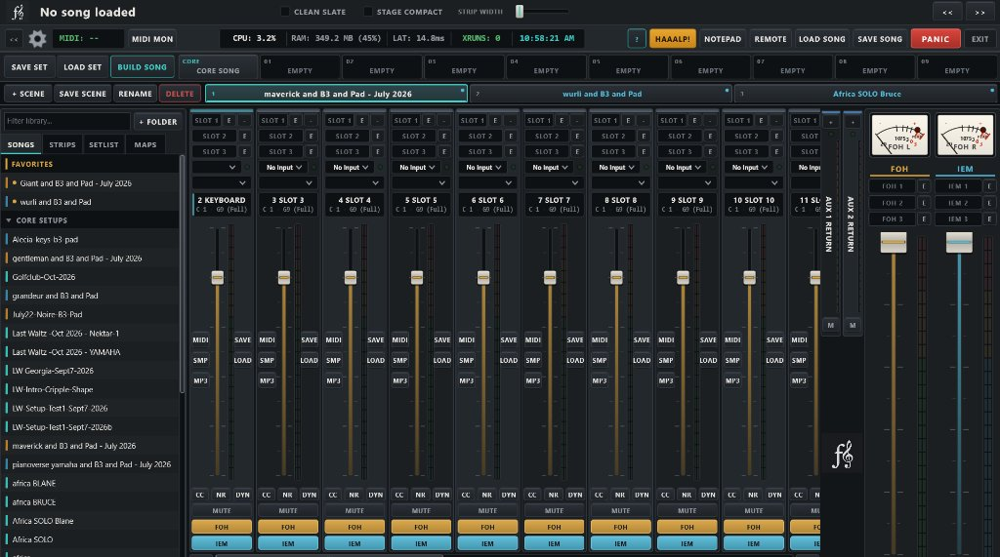
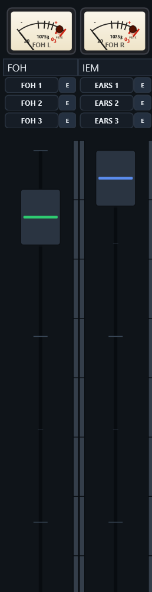
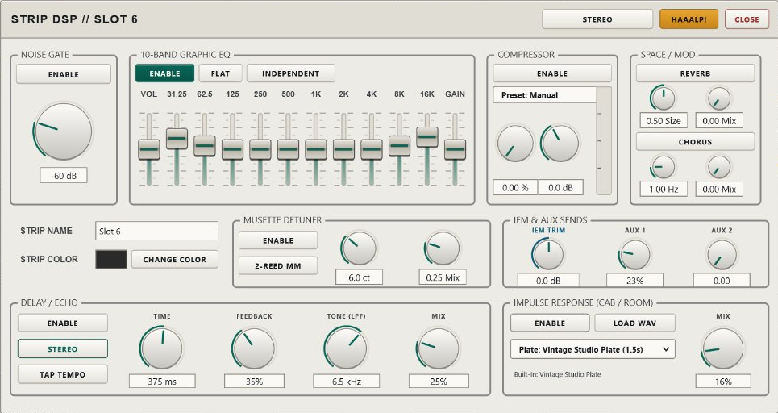
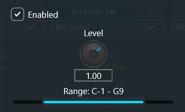
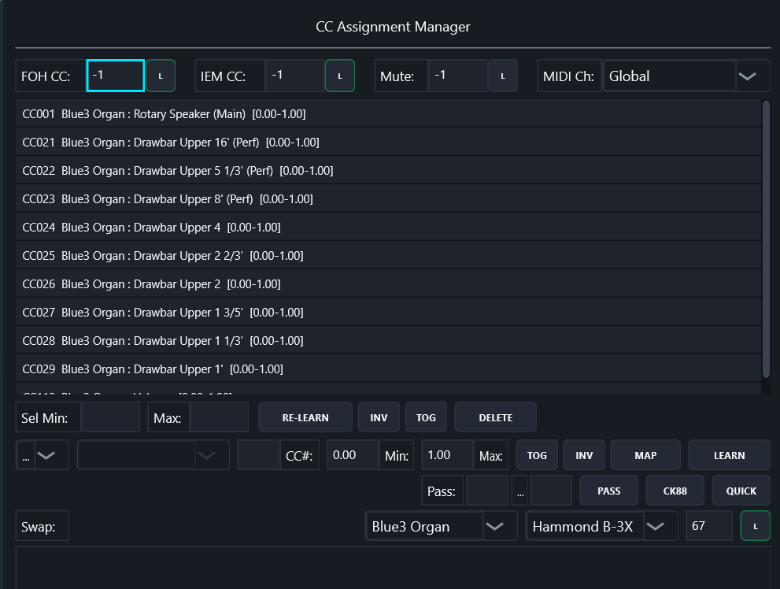
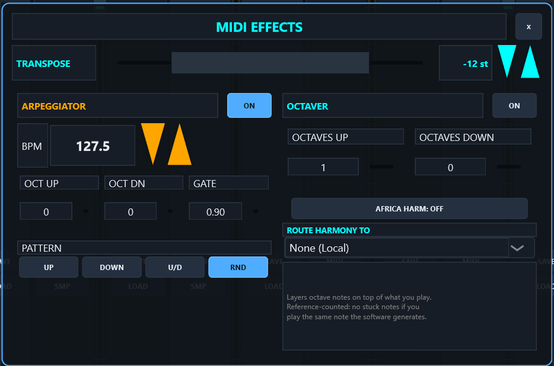
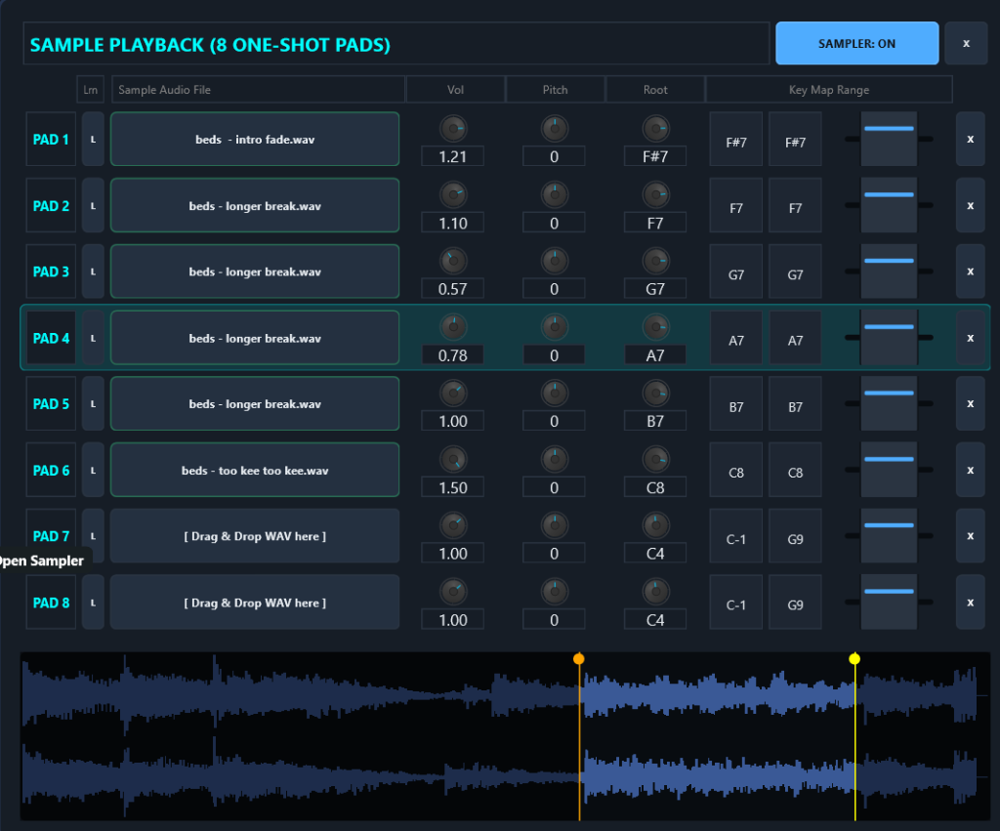
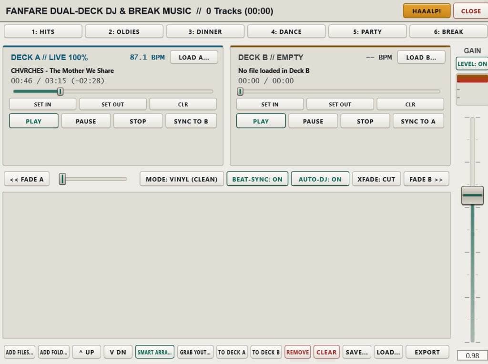
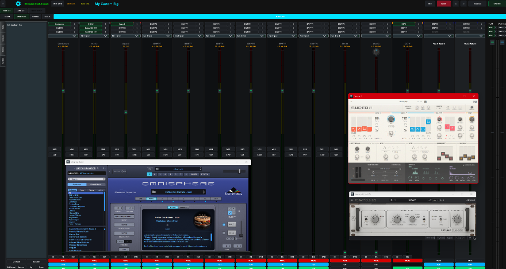

Welcome to Fanfare. Don't Panic.
1. The Building-Block Workflow: Strips → Songs → Scenes → Setlists
Why Fanfare Exists
Fanfare was originally created for an audience of one: the author, built directly around his gigs playing in Eastern Canadian folk-rock and cover bands. His trusty old favourite Windows VST host, Brainspawn Forte, was discontinued nearly a decade ago, and he was far too cheap to buy a Mac just to run Apple MainStage. So, he built Fanfare to fill the void.
If you clicked a bright amber HAAALP! button during soundcheck because nothing is making noise and the drummer is already counting off, take a breath. The chapter you actually want is The No-Sound Emergency Checklist (Chapter 3). Fanfare was built for one job: getting keyboard players through a live gig without a single dropout, stuck note, or fumbled song switch. No virtual patch cords, and no spaghetti node graphs that require an electrical engineering degree at 11:30 PM in a dark bar.
Most plugin hosts force you to rebuild your entire universe from scratch for every tune, or cram 60 plugins into one gigantic file until your laptop smells like a toaster. Fanfare uses a strict four-level hierarchy where you build your favorite instruments once and snap them together like LEGO bricks:
Level 1: Strip (.orstrip)
The Brick. A single channel strip with up to 3 stacked VST3 plugins, 10-band EQ, compressor, stereo/ping-pong/tape delay, per-strip IEM trim, note split, and MIDI CC mappings (like your B3 drawbars).
Level 2: Song (.json)
The Arrangement. A complete 24-strip mixer rack assembled for a specific tune, plus Master FOH/IEM effects and song-specific chord charts.
Level 3: Scene
The Snapshot. Instant, zero-latency snapshots inside a Song that flip strip mutes, fader levels, note ranges, and arpeggiators between Verse, Chorus, and Solo.
Level 4: Setlist (.orset)
The Show. Your ordered list of Songs for tonight's gig, with automatic background preloading of the next Song while you play the current one.
Real-World Stage Use Case
Why Build Bricks First? Suppose you spend Tuesday afternoon dialing in the ultimate Hammond B3 + Leslie strip, complete with all nine drawbars mapped to your controller sliders, expression pedal on CC 11, and a high-pass filter so you don't step on the bass player's frequencies. Save that strip once asDirty B3.orstrip.
Now, whenever your band adds three new classic rock tunes on Friday afternoon, you don't re-map a single knob. You open BUILD SONG, check the box next toDirty B3, check70s Rhodes, checkOberheim Brass, type the song title, and hit BUILD & LOAD SONG. You're gig-ready in twelve seconds.
2. Quick Start: From Download to Noise in Ten Minutes
Everything else in this manual assumes you have a working rig. Here is how to get one in about the time it takes to brew a coffee. Do this at the kitchen table, not at soundcheck.
- Plug in the power brick. Yes, first. Windows laptops do unspeakable things to audio clocks and USB hubs on battery, no matter what any settings screen claims (see the Golden Stage Rule in Chapter 21). If you remember one thing from this page, remember this one.
- Launch Fanfare, click the Gear Icon, and open
AUDIO SETTINGS. Pick your ASIO driver (prefer it over WASAPI), enable the output channels your speakers or IEM rig are actually plugged into, set the sample rate to match the rest of your gear (44.1 or 48 kHz), and start at a 256-sample buffer. Lower it later, at home, with one eye onXRUNS. Chasing 64 samples for the first time at soundcheck is how you meet the guitar player's new pedalboard. - Enable your MIDI keyboard in the same window, then tick only the input channels you actually use. Some controllers expose extra input channels that return junk data, and junk data is how phantom sustain pedals happen.
- Click
SCAN FOR PLUGINS(or accept the automatic VST3 scan prompt on first launch) so Fanfare inventories your installed VST3s. Need this checklist inside the app later? Click the[?]Quick-Start button in the top bar. - Build your first strip. Click
+on any collapsed strip to expand it, clickSLOT 1to load a piano VST3 you like, bring up the strip fader and MasterFOHfader, unmute the strip, and play something. If you hear nothing, stop reading and go straight to Chapter 3; the checklist exists precisely for this moment. - Click
SAVEon the strip and store it asMy Piano.orstrip. It lands in your strip presets folder (%APPDATA%\Fanfare\strips), and from that moment on it is a LEGO brick the Song Builder can snap into any song, forever. - Repeat until you have a piano, an organ, and a pad you like. Then open
BUILD SONG, tick their boxes, type a song name, and hitBUILD & LOAD SONG. Congratulations: you are now a two-keyboard player with one keyboard.
Real-World Stage Use Case
The Kitchen Table Rule: Every minute spent building and saving strips at home is a minute not spent doing it in front of a drummer. Ten minutes of kitchen-table rig building on Tuesday buys you a twelve-second song build at Friday's soundcheck, and that buys you the good chair.
3. The No-Sound Emergency Checklist
Nothing is coming out and the drummer is counting. Work down this list from the top; it is ordered by how often each item turns out to be the culprit, and number one is embarrassingly common.
| # | Check | The Fix |
|---|---|---|
| 1 | Is the strip muted? | Songs load with every strip safely muted (so nothing blasts at load time), and a Scene change may have muted it since. Unmute and move on. |
| 2 | Are the faders up? | Gold FOH fader for the house, cyan IEM fader for your ears. Also read the strip's bottom routing dropdown: if it says Direct: Out 3+4 but your speakers are on outputs 1+2, your piano is playing to an empty room. |
| 3 | MIDI channel mismatch. | Your keyboard transmits on one channel; the strip is listening on another. Open the strip's CC window and set MIDI Ch to Omni as a test. Sound appears? It was the channel; set it properly afterwards. |
| 4 | Note Range collapsed. | Click the range button on the strip. If the highlighted zone is a tiny sliver of the keyboard, hit RESET for the full range. |
| 5 | Wrong audio device or channels. | Open AUDIO SETTINGS from the Gear Icon: correct ASIO driver selected, and the output channels your speakers are on actually enabled. |
| 6 | The plugin didn't load. | Look at the strip's slots: an empty slot means the plugin failed or is missing. Run SCAN FOR PLUGINS and reload the strip. |
| 7 | Hit PANIC anyway. |
Stuck notes, stuck sustain, wedged controllers: one press of PANIC (or P) sweeps all 16 channels and gives you a clean slate. |
The 11:30 PM Version
Mute. Faders. Channel. Range. Device. Slot. Panic. Seven checks, thirty seconds, and it is virtually always one of the first three. If all seven come up clean, check whether the PA speakers are turned on. It has happened to better players than you.
4. Main Console & Header Bar
The top of the Fanfare window is organized into four horizontal rows above your 24-strip mixer console:
| Control | What It Does |
|---|---|
| Song Title & CLEAN SLATE | Shows the active Song name. When CLEAN SLATE is ticked, loading this Song unloads all prior plugins first instead of reusing matching plugin instances across songs. |
STAGE COMPACT & STRIP WIDTH |
STAGE COMPACT defaults to OFF on load so all 24 strips stay visible (while AUX 1 RETURN and AUX 2 RETURN start neatly collapsed as slim 28px columns on the right; click + on any collapsed strip to expand it). When you toggle STAGE COMPACT ON, muted strips fold down to 28px tabs and all unused empty strips collapse into a single + ADD tile right beside your last active strip (left-click + ADD to open the next empty strip, or right-click it to pick any empty strip number). Drag the STRIP WIDTH slider (85px to 260px) to scale expanded strips. Whenever strips exceed the screen width, a high-contrast [ < ] [===] [ > ] scrollbar appears along the bottom of the rack, and rolling your mousewheel over strip headers, nameplates, or collapsed strips (or holding Shift + mousewheel anywhere) pans smoothly left and right. |
<< Sidebar Toggle |
Shows or hides the Library Sidebar (the Songs, Sets, Strips, and Setlist tabs). |
| Spacebar | Advances to the next Song in your Setlist (ignored while you're typing in a text box). |
CPU / RAM / LAT / XRUNS |
Live telemetry. CPU is the audio-callback budget: the one number that predicts dropouts. Click CPU or RAM to open the Per-Strip Resource Inspector. LAT shows round-trip audio latency (or RECONNECT... if your USB cable was yanked). XRUNS reads gap/stall: a gap means Windows never delivered the audio callback in time (a machine problem: drivers, power management, USB delivery), while a stall means Fanfare's own engine workers ran late. Click XRUNS to reset the counter and open the timestamped glitch log. |
[?] / NOTEPAD / REMOTE / HAAALP! |
Opens the interactive Quick-Start guide, the Gig Notepad (Ctrl+N), the Tablet Web HUD & Wi-Fi Hotspot modal, or this manual right to the section you need. Fanfare also clamps its startup window inside your monitor's visible work area on high-DPI displays so the title bar never spawns off-screen. |
PANIC (or P key) |
The Stage Emergency Button. Sends MIDI CC 123 (All Notes Off), CC 120 (All Sound Off), CC 121 (Reset All Controllers), and CC 64 (sustain pedal release) on all 16 MIDI channels, including external MIDI-OUT hardware synths, and flushes every audio buffer. The sustain release deserves the mention: a pedal cable half-tripped out of its jack is the most common "why is that note STILL ringing" cause in live keyboard work. |
Real-World Stage Use Case
The Stuck High C in the Ballad: You're playing a pin-drop ballad. Somebody trips over a sustain pedal cable, or a vintage synth module decides that MIDI Note-Off messages are merely a polite suggestion. Hit the giant redPANICbutton (or tapPon your laptop keyboard). Even if you've filtered out MIDI controllers on that strip, Fanfare bypasses the CC filter specifically for Panic messages so every internal VST and external hardware rack module shuts up immediately.
5. Stage-Proof USB Hotplug & Auto-Recovery (v1.3)
In most Windows DAWs, if a USB MIDI controller or USB ASIO audio interface loses connection for half a second, you are rewarded with a frozen screen, a dead MIDI port that refuses to reconnect until you restart the app, or a terrifying blast of full-scale white noise.
Fanfare v1.3 continuously monitors both your USB MIDI ports and your ASIO/WASAPI audio stream:
- Automatic USB MIDI Re-Binding: Every second, Fanfare checks for newly connected or power-cycled USB MIDI keyboards. If a keyboard drops out, Fanfare fires an automatic
PANICto prevent hung notes; the moment you plug it back in, Fanfare closes the stale Windows handle and re-opens the port live. - Automatic ASIO Audio Recovery: If your audio interface disappears or its hardware callbacks stall for more than 1.5 seconds, Fanfare enters recovery mode (displaying
LAT: RECONNECT...in the top bar) and automatically re-initializes your exact ASIO driver, sample rate, buffer size, and channel routing as soon as the USB bus settles.
Real-World Stage Use Case
The Bass Player Incident: When your bass player accidentally yanks your USB cable out of the computer mid-song, don't touch the mouse. Don't restart Fanfare. Don't even open Audio Settings. Just put the USB cable back in, count to three, go back to playing, and smile at your bass player. Possibly the single most important update in Fanfare history.
6. Channel Strips, FOH/IEM Buses & Per-Strip IEM Trim

- Strip 1 (Monitor In): Defaults to your live audio input monitor strip at the left edge of the console for quick reach.
- Strips 2 through 23: Full instrument/audio strips, each capable of hosting a 3-slot vertical plugin chain (e.g., Piano VST in slot 1 → Vintage Philly Phaser in slot 2 → Rotary Amp in slot 3) OR forwarding filtered/transposed MIDI out to an external hardware synth.
- Strip 24 (MP3 / DJ Player): Dedicated dual-deck break music and backing track player.
Every strip feeds Fanfare's dual-bus stage architecture with independent Front of House and personal monitor control:
- Main Strip Fader & Stereo LED Meters: Controls the strip's live level, sending proportionally to both buses while showing segmented stereo input/output metering right beside the fader track.
FOH(Gold) &IEM(Cyan) Bus Buttons: Independently assign or remove any strip from the Front of House mix and your personal In-Ear Monitor mix (e.g., keep a click track or vocal reference inIEMonly, or route break music toFOHonly).- Per-Strip
IEM TRIM(inDYN, v1.4): Need a specific strip louder or quieter in your ears than in the house? OpenDYNon that strip and turn the cyanIEM TRIMknob fromOFF(-inf) to+6.0 dBrelative to the strip's FOH fader (double-click to snap back to0.0 dB). Whenever a trim offset is active, the strip's cyan button displays a live console badge right on the mixer (such asIEM +3.5dB,IEM -6.0dB, orIEM OFF). - Master
FOH& MasterIEMFaders (Right Dock): Full-throw master faders, dedicated analog/LED VU meters, and independent 3-slot Master VST chains for the house feed and your ears. - Output Routing Selector: Route any strip to
Main FOH/IEM, directly out to hardware pairs (Direct: Out 1+2through7+8or monoOut 1..8), or Subgroup to Strip (routing audio into any higher-numbered strip so one strip acts as a submix bus).
Inside each strip's DYN panel, the IEM & AUX SENDS module also gives you AUX 1 and AUX 2 send knobs feeding the two Aux Return strips on the right of the rack. Those returns start collapsed to save horizontal space (click + to expand them) and act as full channel strips in their own right: load one lush hall reverb into AUX 1 RETURN, send a taste of every keyboard to it, and your whole rig shares one cohesive room without burning CPU on twenty separate reverb plugins.
One more strip trick: any of the three chain slots can be switched from hosting a plugin to acting as a MIDI OUT destination for a hardware synth's MIDI port. The strip's note range, transposes, and arpeggiator all still apply before the notes leave the building, so your split points and one-finger synth bubbles work identically on software and hardware voices alike.
Real-World Stage Use Case
"More Me" Without Getting Fired: Halfway through the second set, the guitar player turns his amp up to eleven and you can't hear your Rhodes comping anymore, while your wide stereo synth pad is swallowing up your own in-ears. If you turn up your main volume knob on a regular keyboard, the Front of House engineer immediately pulls your fader down at the mixing desk and leaves it there for the rest of the night. In Fanfare, pop openDYNon your Rhodes strip and nudgeIEM TRIMto+4.0 dB, then pull your synth pad'sIEM TRIMback to-5.0 dB. Your stage mix locks right into focus, the strip buttons showIEM +4.0dBandIEM -5.0dBat a glance, and the Front of House mix doesn't budge by a tenth of a decibel.
7. Strip DSP (Gate, 10-Band EQ, Compressor, Delay, Space & IR)

Click the DYN button at the bottom of any strip (or right-click a strip header and choose Open Channel Strip (EQ/Comp)...) to open the built-in zero-latency DSP console for that strip. Everything here is lock-free, pre-allocated, runs after your 3 VST slots, and uses virtually zero CPU:
- Input Channel Mode Button (Top Right): Cycles between
STEREO,MONO (L+R),MONO (LEFT), andMONO (RIGHT). - Noise Gate: Silences noisy analog inputs or vintage amp-sim hiss when you aren't playing.
- 10-Band Graphic EQ: Classic octave bands from
31.25 Hzto16 kHz(±12 dB per band), plus an inputVOLtrim, outputGAINtrim, and a one-clickFLATreset button. - Compressor + Gain Reduction Meter: Includes 5 stage-tuned presets:
Manual,MP3 / Track Leveler,Vocal / Lead Focus,Punchy Drums, andBrickwall Limiter. - Space / Mod (Reverb & Chorus): Built-in stereo room reverb and chorus for strips that just need a touch of air or width without loading another VST.
- Delay / Echo (v1.4): Full stereo tempo/time delay module with four distinct stage voices:
STEREO(true L/R repeats),PING-PONG(wide alternating left-right bounce),MONO(centered slapback/echo), andTAPE WARM(warm analog-filtered repeats with gentle tape saturation). Includes a liveTAP TEMPObutton right in the header, smooth click-freeTIMEslewing (10 msto2.00 s), runaway-safeFEEDBACK(0%to92%with low-cut and soft limiting),TONE (LPF)high-cut damping (600 Hzto16 kHz), and a unity-dryMIXlaw so flicking on an echo mid-solo never drops your dry lead volume. - IEM & Aux Sends: Per-strip
IEM TRIM(OFFto+6.0 dBrelative to FOH) alongsideAUX 1andAUX 2bus send knobs. - Impulse Response (Cab / Room) Loader: Load any
.wavguitar cab, rotary horn, or acoustic body impulse response with dry/wet mix control.
Real-World Stage Use Case
Fixing the "Left-Ear Only" DI, Piezo Quack & Instant 80s Lead Echo: Plug an acoustic instrument or mono synth into Input 1 of a stereo interface and it only comes out of the left PA speaker; click the top-right mode button to switch fromSTEREOtoMONO (LEFT)for an instant centered image. Got an acoustic pickup that sounds like a rubber band stretched over a tin can? ClickLOAD IR, drop in a mic'd body impulse WAV, and blendIR Mixto 40%. Need your dry Minimoog patch to blossom into an arena solo on the bridge? Enable Delay / Echo inPING-PONGorTAPE WARMmode, tap quarter notes onTAP TEMPO, rollTONEback to3.5 kHzso the repeats sit tucked behind your attack, and save it straight into your Solo Scene.
8. Accordion Musette Detuner ("TEMU Mode")
Located at the bottom center of the Strip DSP window, the Accordion Musette Detuner uses dual pitch-shifting delay lines modulated by quadrature LFOs to turn a dry single-reed accordion, organ, or synth patch into a shimmering European musette register:
2-REED (MM): Classic two-reed wet detune (one dry reed + one sharp detuned reed).3-REED (MMM): Full French/Italian three-reed chorus (dry center reed + symmetrical sharp and flat detuned reeds).TEMU(42 ct): Locks the detune depth to a glorious 42 cents of unapologetically seasick street-cafe wobble.
Real-World Stage Use Case
From Newfoundland Fish Tunes to Baguettes: The app author got an accordion to add to some songs. Despite being the worst accordion player in his city, people liked the sound. His accordion had two reeds, slightly detuned, giving a cool "French cafe" feel. Then he got a better one, but it was just one reed. Cool for Newfoundland fish tunes, but did not evoke baguettes.
Enter TEMU Musette Mode! Adds just enough warble to a single-reed accordion tone to allow you to sniff, "that is NOT how you pronounce Peugeot..." to your bass player.
9. Note Range & Keyboard Splits

Click the NR button (or the Note Range readout, e.g. C-1 - G9 (Full)) on any strip to open the interactive 128-key Piano Range Callout. The moment the callout opens, MIDI Learn is automatically armed:
- Play two keys on your controller: The first note you strike sets both Low and High to that single key; the second note you strike expands the zone to span between your lowest and highest played keys.
- Or drag with the mouse: Click and drag across the virtual keyboard to set the split visually.
- Click
DONEto lock it in, orRESETto restore the fullC-1toG9range (MIDI notes 0 to 127).
Real-World Stage Use Case
The 4-Zone 88-Key Frankensplit: You have one 88-key board on stage and the arrangement calls for synth bass in the bottom octave, Rhodes chords in the middle, brass stabs in the upper-mid, and a single high C#7 that triggers a gong sample. Instead of doing mental math to remember whether Middle C is MIDI note 60 or 48, click the Note Range button on each strip, tap the lowest and highest key of that zone on your physical keyboard, and hitDONE.
10. CC Assignments & B3 Inverse Drawbars

Click the CC button on any strip (or long-press its FOH/IEM/Mute controls) to open the CC Assignment Manager. By default, Fanfare blocks unmapped MIDI CCs from reaching your plugins so an accidental brush of a controller knob doesn't detune your synth mid-solo. Only the CCs you map or passthrough here are allowed in.
| Feature | How It Works |
|---|---|
| Strip Fader & Mute CCs | Bind hardware sliders or buttons directly to this strip's FOH CC, IEM CC, or Mute toggle, plus override the strip's MIDI Ch (Global, Omni, None (Routed Only), or Ch 1..16). |
QUICK Learn (Purple Button) |
The fastest way to map anything: click QUICK, wiggle a knob inside your VST plugin window, and wiggle a fader on your MIDI keyboard (in either order). Fanfare binds them automatically. |
INV (Invert Direction) |
Reverses the CC polarity so pulling a physical slider down toward you increases the parameter from Min to Max, and pushing it up away from you decreases it. |
TOG (Latching Toggle Mode) |
Turns a momentary footswitch or drum pad into a latching switch: press once to flip the parameter to Max, press again to flip it back to Min. |
Pass: [in] > [out] & CK88 |
Lets a CC pass directly into the plugin (and optionally remaps its number). The CK88 button one-click-enables Mod Wheel, Expression, Sustain, Soft, and Sostenuto. |
Swap: [Plugin A] [Plugin B] |
Assigns one CC button to alternate which of two loaded plugins on the strip receives MIDI notes, while keeping both warm so held notes decay naturally without getting cut off. |
Real-World Stage Use Case
Pulling Out All The Stops (Literally): Why does theINV(Invert) button exist? Because of Hammond B3 drawbars.
On a standard MIDI controller, pushing a slider away from you sends127(maximum), and pulling it toward you sends0(minimum). On a real Hammond organ, drawbars work the exact opposite way: pushing them in (away from you) is0(silent), and pulling them out toward you makes the organ roar at8(full volume). Hence the phrase "pulling out all the stops."
If you map your 9 MIDI sliders to a B3 plugin withoutINV, your muscle memory will be completely backwards all night: you'll pull the sliders toward you for the big gospel chorus and the organ will vanish into thin air. ClickINVon your 9 drawbar mappings, and pulling your physical sliders down toward you pulls the virtual drawbars out, just like Laurens Hammond intended in 1935.
Bonus Use Case (Leslie Speed Footswitch): Got a momentary footswitch or controller button that only sends127while your foot is actively holding it down? EnableTOGon your Leslie Fast/Slow mapping so tapping the switch once latches the rotor into Fast, and tapping it again drops it back to Slow.
11. MIDI Effects: Transpose, Arpeggiator & Harmonizer

Click MIDI on any strip to open its real-time MIDI processor. Everything on this screen happens after the strip's Note Range split filter and before your VST plugins (or external MIDI-OUT synth), which opens up an absurd number of stage shortcuts:
| Module | What It Does & How It Works |
|---|---|
Transpose (-48 to +48 st) |
Shifts incoming notes in semitones for this strip only. Because it runs after the Note Range split, your split points on the physical keyboard never move when you transpose a sound up two octaves or into another key. |
Arpeggiator (ON / OFF) |
Tempo-synced pattern generator with exact BPM (1 to 999 with hold-to-repeat +/- nudge arrows), OCT UP (0..4), OCT DN (0..4), staccato/legato GATE length (0.01..1.0), and four pattern engines: UP, DOWN, U/D (Up/Down), and RND (Random). |
Octaver (OCTAVES UP / DOWN) |
Stacks up to 3 octaves above and 3 octaves below every note you play. Uses reference-counted note tracking so if your hand plays a note that the Octaver is already holding, releasing one key won't prematurely choke the other. |
Africa Harmonizer & PLAY IN C SPLIT |
Cycles between AFRICA: PART 1, AFRICA: PART 2, and PLAY IN C SPLIT to generate automatic diatonic parallel harmonies from a single-finger melody line. |
ROUTE HARMONY TO |
Sends the generated harmony/octave notes across the console into a different strip while keeping your played root note on the current strip. |
Stage Use Case 1 · Transpose
Playing Every Song in C ("The People's Key!"): Look, nobody became a gigging keyboard player because they love reading five flats in D-flat major at 12:45 AM, or because the singer woke up with a scratchy throat and wants to drop "Valerie" down a half-step into E-flat.
With per-strip Transpose, you can set up every single song in your setlist so you play in C Major (The People's Key!) the entire night. Song is in E-flat? Set Transpose to+3 stand hammer away on the white keys. Song is in B? Set it to-1 st. The audience won't care! (Though the bass player who's watching your hands to know the next chord will be thrown for an absolute loop.)
Split-Board Bonus: When you slice an 88-key board into four small zones, your upper-right horn section ends up living in the piccolo register where trumpets sound like angry mosquitoes. Drop that strip's Transpose to-24 st(two octaves down), and playing the top octave of your keyboard triggers rich, chest-rattling baritone and tenor brass right in their sweet spot.
Stage Use Case 2 · Arpeggiator
"Hungry Like the Wolf" & One-Finger 80s Synth Bubbles: Trying to hand-play Nick Rhodes' relentless 16th-note Roland Jupiter-8 percolation on "Hungry Like the Wolf" for four straight minutes while also hitting the chorus brass stabs and synth strings is a recipe for carpal tunnel.
Instead, isolate a single bottom key on your keyboard (say,C2) as its own strip zone, turn the ArpeggiatorON, dial theBPMto127.0, set Pattern toRND(orU/D) withOCT UP: 2and a tight, bouncyGATEaround0.35. Hold down one finger in the bottom corner (or tap a sustain pedal) and the classic 1982 Rio synth bubble locks in all night while both of your hands stay free for the rest of the arrangement. Same trick works for "Baba O'Riley," "Save a Prayer," Stranger Things synth beds, or turning a static string pad into a rhythmic disco chop.
Stage Use Case 3 · Octaver & Harmonizer
Monster 3-Octave Brass & One-Hand "Africa": Need a massive 1970s Earth, Wind & Fire horn stab or a 6-octave cinematic piano octave hit, but your left hand is busy playing synth bass? Turn the OctaverONwithOCTAVES UP: 1andOCTAVES DOWN: 1. Every single-note brass line you play with two fingers automatically fires across three octaves at once.
For Toto's "Africa," turn onAFRICA: PART 1(orPLAY IN C SPLIT), set Route Harmony To so the harmony voices feed your Marimba/Brass strip on Strip 4 while your main synth plays the lead on Strip 3, and set Strip 4's MIDI Channel (in theCCwindow) toNone (Routed Only). Suddenly you sound like four session players in 1982 using one right hand.
12. 8-Pad One-Shot & Loop Sampler

Every strip includes a built-in 8-Pad Sample Player (click SMP on the strip). You don't need to load a 900 MB Kontakt instance just to fire a sound effect or a drum break:
- Drag & Drop WAVs: Drop any
.wavfile onto Pads 1 through 8. - Per-Pad Controls: Each pad has its own
Volumeknob, MIDI CC bind for pad volume,LOOPtoggle,Pitchoffset (±24 semitones),Rootnote, andKey Map Range. - One-Click MIDI Learn (
L): ClickLon any pad and strike a key on your controller to assign that sample to a single key (or strike two keys to pitch-stretch it across a range). - Waveform Splice Editor (Bottom): Click any pad row to view its audio waveform and drag the start/end handles to trim dead air off the front or back of the sample.
Real-World Stage Use Case
Midnight Oil's "Beds Are Burning": You're in a cover band. You do Midnight Oil's "Beds Are Burning." The band is entrusting you and your whimsical sense of rhythm to play the massive percussion breaks going into Chorus 1 and Chorus 2.
Sample the record, drop the WAV into the pads, use the Waveform Splice Editor handles at the bottom to isolate each individual drum hit right on the transient, clickLto map them to adjacent keys on your keyboard, and you'll be like a god.
13. The Break DJ Strip: Dual-Deck Break Music & Auto-DJ

The Break DJ strip is hardwired to Fanfare's Dual-Deck DJ & Break Music Player. Click MP3 on the strip (or switch to the BREAK / DJ tab on your Tablet HUD) to open it:
- 6 Preset Playlist Banks: Six instant buttons across the top (e.g., Hits, Oldies, Dinner, Dance, Ballads, Break). Left-click to load and play; right-click to assign a folder on your hard drive or rename the bank.
- Dual Decks (Deck A & Deck B) + Equal-Power Crossfader: Load tracks into Deck A and Deck B, set non-destructive
SET INandSET OUTtrim cues to skip long radio intros/outros, and crossfade manually or with one-click<< FADE A/FADE B >>buttons. - Auto-DJ & Beat-Sync: When
AUTO-DJis enabled, Fanfare automatically crossfades into the next track in your playlist when the current track reaches its Cue-Out point. EnableBEAT-SYNCand choose betweenVINYL RESAMPLEorKEY-LOCK STRETCH(SoundTouch pitch-locked time stretching) to match tempos during transitions. - Smart Arrange: Click
SMART ARRANGEto automatically sort your break playlist by Smooth BPM Ramp, Minimal Tempo Step, Energy Wave, or trim the playlist to fit an exact 30, 45, or 60-minute set break. - YouTube 192k MP3 Grabber (
GRAB YT): Someone in the wedding party requests a first-dance song you've never heard of five minutes before they walk in? ClickGRAB YT, paste the YouTube URL, and Fanfare downloads and converts it to a 192 kbps MP3 right into your playlist.
Real-World Stage Use Case
Surviving the 20-Minute Set Break Without Phone Notifications: If you plug your phone into the mixer for break music, three things are guaranteed to happen: a text message ding will blast through the PA at 110 dB, a YouTube ad for lawnmowers will play right after a ballad, or you'll walk to the bar and your Bluetooth will disconnect. With the Break DJ strip, your break music runs inside Fanfare through its own broadcast leveler compressor, routed to FOH (and muted in your IEMs if you want peace and quiet), and you can skip tracks or adjust volume from your tablet across the room.
14. The Song Builder
Click the BUILD SONG button on the Stage Queue row to open the Song Builder overlay. It scans your saved .orstrip presets folder and presents them as a checklist:
- Check the boxes next to the Strips you want in your new Song (up to 24 strips).
- Set the default volume
CC:number for each checked strip (defaults to CC 7). - Type a Song Name (e.g.,
SuperstitionorRosanna). - Optionally tick Pre-assign Consecutive MIDI Channels (assigns Ch 1, Ch 2, Ch 3... to each strip) and/or Clean Slate Load.
- Click
BUILD & LOAD SONG. Fanfare writes the new.jsonSong file into your Songs library and loads it onto the mixer immediately, with all strips safely initialized muted so nothing blasts unexpectedly.
Real-World Stage Use Case
The 30-Second Soundcheck Audible: The bandleader calls an audible at soundcheck: "Let's do that Stevie Wonder tune tonight." Instead of dragging plugins around one by one, clickBUILD SONG, tickClavinet Wah,Moog Bass, andRhodes Mk1, name itStevie Clav, and hitBUILD & LOAD SONG. Actually managing to play like Stevie is not yet supported, but is slated for a future release.
15. Scenes (Instant Zero-Latency Snapshots)
Row 4 of the header bar is your Scene Bar (+ SCENE, SAVE SCENE, RENAME, DELETE, followed by your Scene buttons). While a Song defines which VST plugins are loaded in your 24 strips, a Scene is an instantaneous snapshot of your mixer state within that Song:
- Strip Mute / Unmute states (and auto-collapse states when
STAGE COMPACTis on) - Strip fader levels,
FOH/IEMbus assignments, per-stripIEM TRIMoffsets, and Aux sends - Note Range splits & Transpose settings
- Strip DSP settings (EQ, Gate, Compressor, Stereo/Ping-Pong/Tape Delay, Reverb, Chorus, Musette)
- Arpeggiator, Harmonizer, and Sampler states
Whenever you click from Scene 1 to Scene 2, Fanfare automatically saves your current tweaks to Scene 1 before switching, or you can click SAVE SCENE at any time. Right-click any Scene button to Assign MIDI Trigger (Learn)... so a Program Change message from your keyboard footswitch or pad jumps straight to that Scene.
Real-World Stage Use Case
Verse Piano → Chorus Synth Brass → Bridge Solo: Never load two separate Songs for the Verse and Chorus of the same tune. Put your Piano on Strip 2, your Synth Brass on Strip 3, and your Minimoog Lead on Strip 4 inside one Song. In Scene 1 ("VERSE"), unmute Strip 2 (Piano) and mute Strips 3 & 4. Click+ SCENE, rename it "CHORUS", and unmute Strip 3 (Brass). Click+ SCENE, rename it "SOLO", and unmute Strip 4 (Moog). Because all three plugins are already sitting in RAM inside the same Song, switching between Verse, Chorus, and Solo takes 0.0 milliseconds and never cuts off held reverb tails.
16. Stage Queue & Background Preloading
Row 3 of the header bar contains 14 CORE SONG queue buttons alongside SAVE SET, LOAD SET, and BUILD SONG:
- Assigning Songs: Drag any Song from the Library Sidebar onto a Queue button, or right-click a Queue button and choose
Assign Song File.... - Bright Green / Cyan Active Highlight: The Song currently live on stage.
- Pulsing Amber Dot: Fanfare's background thread is currently pre-building the VST plugins for this Song on your Efficiency CPU cores (true whenever
Auto: Fast Performance Cores Onlyis selected in Chapter 21). - Solid Green Ready Dot: The next Song's plugins are already built and warm in memory, ready for an instant swap when you click it or hit
Spacebar.
Real-World Stage Use Case
Zero Awkward Stage Silence Between Songs: Kontakt sample libraries and heavy analog modeling synths can take 6 to 10 seconds to load from disk. On stage, 8 seconds of dead silence feels like an eternity. When you load Song 1 from your Stage Queue, Fanfare immediately starts preloading Song 2 in the background while you're playing Song 1. By the time the drummer hits the final cymbal crash of Song 1, the status bar saysNext Ready: Song 2. Hit theSpacebarand Song 2 snaps onto the console immediately.
17. Setlists & The Library Sidebar
On the left side of the console (toggleable with the << button), the Library Sidebar gives you four tabs:
SONGS: Browse, search, favorite (star), organize into folders, and double-click to load any.jsonSong.SETS: Browse and double-click to load saved.orsetSetlists.STRIPS: Browse your.orstripbuilding blocks. Drag and drop any strip from this tab directly onto any of the 24 mixer strips to load it.SETLIST: Reorder tonight's show, add the current Song, remove songs, or step through the setlist.
18. Gig Notepad & Stage Chord Badges
Click NOTEPAD in the top bar (or press Ctrl+N) to open the Gig Notepad. Notes are saved directly inside the current Song's .json file and sync live over WebSockets to your Tablet Stage HUD:
- Multiple Tabs per Song: Create tabs for
Chords,Lyrics, orPatch Cuesusing the+ TABandTABSbuttons. LIVE LOCKEDvs Edit Mode: WhenLIVE LOCKEDis active, the notepad renders your chart in high-contrast stage view and prevents accidental typing. ClickLIVE LOCKEDto unlock the editor and formatting toolbar.- Automatic Chord Badges & Color Tags: Wrap any chord in brackets like
[C#m7],[F#7alt], or[G/B]and Fanfare renders it as a glowing blue Chord Badge pill. Use color buttons or tags like[blue]Verse 1[/blue],[green]Chorus[/green],[yellow]Solo in E[/yellow],[red]STOP ON 4![/red], or**Bold**.
Real-World Stage Use Case
Remembering the Bridge Modulation You Only Play Twice a Year: You know 95% of the song by heart, except for that weird 5-bar bridge before the guitar solo that modulates up a minor third, and the fact that the singer always skips the third verse at weddings. Put[red]WATCH SINGER - SKIPS VERSE 3![/red]and[Ebmaj7] [Ab13] [Dbmaj9]in the Gig Notepad. Every time that Song loads, your chart appears automatically on both your laptop and your iPad/Android tablet sitting on your music stand.
19. Tablet Stage HUD & Wi-Fi SoftAP Hotspot
Click REMOTE in the header bar to open the Stage Remote & Wi-Fi Hotspot Controller. Fanfare embeds a high-speed HTTP + WebSocket server on port 8080 that turns any iPad, Android tablet, or phone into a zero-install touchscreen Stage Companion:
- Left Column (Stage Wi-Fi SoftAP): Don't trust the venue's "Free_Bar_WiFi" router with 200 patrons streaming sports on it. Click
START STAGE HOTSPOTto broadcast a direct, private Wi-Fi network straight from your laptop's Wi-Fi card, then scan the top QR code with your tablet camera to join it. - Right Column (Tablet Stage Companion): Scan the bottom QR code (or open the displayed
http://...URL) to launch the 5-tab Stage HUD in your tablet browser:- STAGE HUD: Giant Prev/Next song buttons, setlist strip with green preload indicators, active instruments list, 88-Key Visual Zone Map, quick chord chart preview, and live segmented stereo LED FOH/IEM VU meters.
- SONGS: Color-coded touch grid of your entire Song library with instant tag filtering (
PIANO,B3 ORGAN,SYNTH / PAD,BRASS / HORNS,FAVORITES). - GIG NOTEPAD: Full-screen live chord chart & lyric viewer/editor.
- TOUCH MIXER: Multi-touch FOH, IEM, Mute, and Master faders.
- BREAK / DJ: Remote control for the Break DJ strip's Dual-Deck player, including the YouTube MP3 grabber.
- Stage-Hardened Front Panel Controls (v1.4): The Tablet HUD header includes a one-tap
BRIGHT/DARKskin toggle built for sunlit outdoor festival patios, a liveWS: msWebSocket latency readout so you always know your link is healthy, and a guardedPANIC · HOLDbutton that requires a deliberate 0.7-second press-and-hold so a stray thumb swipe never silences a sustained chord mid-ballad. - USB Tethering Tip: Want wired, interference-free reliability without Wi-Fi? Plug a USB cable from your tablet to your laptop and enable USB Tethering on the tablet.
Real-World Stage Use Case
Closing the Laptop Lid on Stage: Nobody looks cool staring into a glowing spreadsheet on a laptop stand in the middle of a funk gig. Park your laptop safely in your rack bag off to the side, Velcro a 10-inch tablet onto your top keyboard's music rest, and run the entire night (song switches, chord charts, fader rides, and break music) from the touchscreen HUD.
20. Configuration, Bus Routing & Stress Test
Click the Gear Icon on the left of the header bar to open the Configuration modal:
THEME(v1.4): Switch instantly betweenFront Panel Dark(anodised dark hardware console with gold FOH and cyan IEM bus coding for dim clubs) andFront Panel Bright(a high-contrast daylight hardware skin engineered so every label, knob, and dropdown stays razor-sharp on sunlit outdoor festival stages).AUDIO SETTINGS: Select your ASIO driver, active input/output channels, sample rate (44.1 / 48 kHz), and buffer size, plus enable/disable MIDI input devices.ENGINE & CPU TUNING: Opens the hybrid CPU affinity and hardware interrupt shield settings (see Chapter 21).SCAN FOR PLUGINS: Scans your system VST3 directories for newly installed plugins.BUS ROUTING: Choose which physical stereo outputs on your audio interface carry the FOH Master Bus (Outputs1+2,3+4,5+6, or7+8), which carry the IEM Master Bus, and set your Global Default MIDI Channel (OmniorCh 1..16).RESET AUDIO: Manually closes and re-opens the audio driver and refreshes USB MIDI ports.RUN STRESS TEST: Torture-tests your rig by firing rapid scene changes and heavy synthetic DSP load so you can verify your buffer size at home instead of finding out during the guitar solo on Saturday night.
21. Engine & CPU Core Optimization
Modern Windows laptops (especially 12th-14th Gen Intel & Core Ultra) have a habit of sabotaging live audio even when your CPU meter says 12%. Fanfare's Engine & CPU Optimization screen gives you four plain-English switches that tame the Windows kernel:
- CPU Core Assignment (
Auto: Fast Performance Cores OnlyvsUse All Cores): On hybrid CPUs, pins real-time audio and DSP worker threads exclusively to fast Performance cores (P-cores), while steering UI graphics, disk streaming, and background Song preloading onto Efficiency cores (E-cores) so a background song load never causes an audio click. - Shelter CPU 0 (Hardware Interrupt Shield): Windows routes almost all motherboard hardware interrupts (USB controllers, Wi-Fi adapters, battery ACPI sensors) to CPU Core 0. Enabling Shelter CPU 0 evacuates Fanfare's real-time audio threads off Core 0 so a Wi-Fi or battery polling spike never interrupts an audio buffer.
- Prevent Windows 11 Power Throttling (EcoQoS): Stops Windows 11 from secretly putting your audio threads into "Efficiency Mode" and cutting your CPU clock speed in half between songs.
- DSP Processing Pipeline (
Parallel Multi-ThreadingvsSequential Inline): Parallel mode distributes active strips across multiple physical P-cores simultaneously using lock-free work-sharing; Sequential mode processes strips one after another on a single thread.
Golden Stage Rule
Always Plug In Your AC Power Brick: When a Windows laptop runs on battery power, the motherboard's embedded controller aggressively throttles CPU clock speeds and puts USB hubs to sleep, no matter what software settings you enable. Fanfare will warn you if it detects battery operation at startup. Always plug into AC mains power on stage!
22. Per-Strip Resource & DSP Inspector

Click the CPU: % or RAM: MB readout in the top telemetry bar at any time to open the Fanfare Resource & DSP Inspector. It displays four live memory/CPU summary cards across the top (Process RAM Working Set, Virtual Commit Charge, Total Real-Time DSP Load, and Free System RAM) and a live per-strip table showing exactly how much real-time DSP CPU percentage each strip and Aux Return is consuming.
One quirk worth knowing before it alarms you: Total Real-Time DSP Load is the sum of every strip's individual load, and because strips are processed in parallel it can legitimately exceed 100%. The header CPU readout is the number that actually predicts dropouts.
Real-World Stage Use Case
Finding the Culprit Plugin Before the Downbeat: Your CPU meter suddenly jumps to 65% and you have eight strips loaded. Instead of guessing which plugin is eating your processor alive, clickCPU:in the top bar. You'll immediately see that Strip 2 (Rhodes) is using 1.8% CPU, Strip 3 (B3) is using 3.2% CPU, and Strip 6 has a boutique synthesizer with "Ultra 16x Oversampling" turned on eating 48% CPU by itself. Mute Strip 6 or switch its oversampling to 2x, and your CPU drops right back to 10%.
23. Comments, Feature Ideas & Rolling Your Own
Got a stage war story, a bug report, or an idea for a feature that would save your bacon on a Saturday night? Jump into the conversation on our GitHub Discussions page and let us know what you're playing and what you need.
The Roll-Your-Own Approach
Hack It to Fit Your Rig with Google Antigravity: Because Fanfare is 100% open-source C++ and JUCE, you don't have to wait around wishing a commercial software company would add a button for your specific keyboard or band setup.
Clone the repository, drop the source code and required dependencies into Google Antigravity, and tell the agent what you want changed. Whether you need a custom harmonizer scale for a single 80s cover tune, a specialized MIDI controller handshake, or a custom stage display, you can build your own personalized fork in an afternoon.